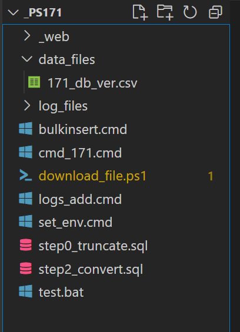

SQL Server Jobs
This job downloads a Canada population data file from StatsCan website
(a source of open data), then uploads it to staging tables in SQL server.
This job also optionally validates and transforms the data,
making it ready for promoting into operational data, on which Data analysis
programs analyze.
This job is deployed as a SQL Server job. for creating and managing SQL Server
jobs, refer to my SQL Server Jobs project.
The code structure of this app

Notes:
-
The entry of this job is a Windows command script, but it calls other Windows
command files, BCP and SQLCMD utilities, and powershells script as its sub-routines.
-
cmd_171.cmd is the main entry point. it is different running from
Windows Command Window and running from SQL Server job. First the
running principal is the Agent account when running from SQL server
agent while running from Windows Command line it is the log-in user,
or admin if Command Line is started with Run As Admin. Secondly, the
default working directory is often the application folder so the
relative path in code works. when SQL Server Agent runs it, the working
directory is not the application directory. So the job code requires
using absolute path. The solution is creating a context variable of
the path of the running main entry file set mypath=%~dp0 and use
it in all script. A powershell sub-routine gets the context variable
by ${env:mypath} (see it in download_file.ps1)
-
running powershell sub-routine from SQL Server Agent requires a permission.
Run Windows Command with Run as administrator, execute "Set-ExecutionPolicy
RemoteSigned Process" (check get-help set-executionpolicy, and
Get-ExecutionPolicy -list) Reference:
https://www.sharepointdiary.com/2014/03/fix-for-powershell-script-cannot-be-loaded-because-running-scripts-is-disabled-on-this-system.html#ixzz7Oh15hRsH"
-
Credentials are stored in enviroment variables (see set-env.cmd) so the script files can use
without
exposing them.
-
each run creates a log file saved in the log_files folder, each file is
named with a timestamp.
-
downloaded files are saved in data_files folder.